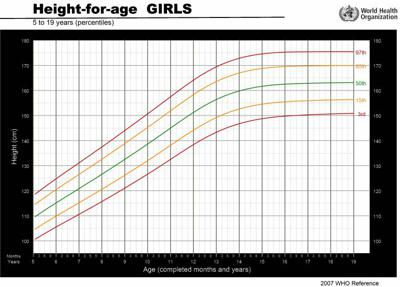
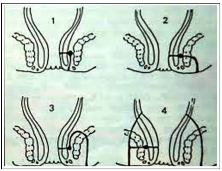
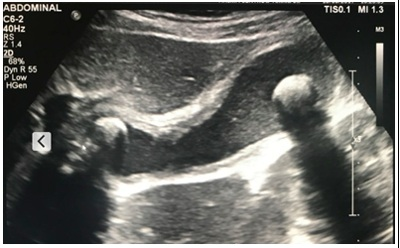

Questão 1 · Cirurgia Torácica · Cirurgia · 4000131371Os tumores mais comuns na parede torácica são:
A neurogênicos.
B lipomas.
C hemangiomas.
D linfangiomas.
Questão 2 · PneumoniasBroncopneumonias BCP na Inf ância · Pneumologia · 4000131370A pneumonia redonda ocorre mais frequentemente em:
A crianças.
B adolescentes.
C pessoas de meia-idade.
D idosos.
Questão 3 · Diagnóstico laboratorial · 4000131369Leia o caso clínico a seguir. Lactente de 18 meses, do sexo masculino, é trazido à assistência médica, pois, há 24 horas, apresenta febre e vômitos (dois episódios) pós-alimentares. Ao exame clínico, a criança encontra-se em bom estado geral, temperatura axilar de 38,5 ºC e sem outras anormalidades. Foram então realizados os seguintes exames laboratoriais: hemograma (Ht: 33%, Hb: 11g/dl, leucócitos totais: 8.460 /mm³, neutró los: 49%, basó lo: 2%, linfócito: 59%, eosinó lo: 2%, monócitos: 2%) e EAS (aspecto: límpido; cor: amarelo citrino; pH: 6,5; densidade: 1020; nitrito: negativo; proteínas: ausentes; leucócitos: 15 p/c; hemácias: 3 p/c; células epiteliais: 5 p/c; flora bacteriana: moderada; ausência de cilindros ou cristais). A melhor conduta, caso haja suspeita de infecção urinária, é:
A iniciar antibioticoterapia para infecção urinária.
B colher urocultura por sondagem uretral.
C realizar ultrassonografia de rins e vias urinárias.
D repetir EAS para confirmação diagnóstica.
Questão 4 · Doença por lesões mínimas · Causas secundárias · Nef rologia · 4000131368A síndrome nefrótica idiopática é a mais frequente das manifestações clínicas apresentada em portadores de glomerulopatias primárias, na faixa etária pediátrica. Sua confirmação diagnóstica baseia-se nas alterações clínico laboratoriais e o achado histopatológico mais comum é a síndrome nefrótica por lesões mínimas (SNLM). Em qual situação, a síndrome nefrótica poderá ser de origem secundária?
A Proteinúria de 24 horas elevada e albumina sérica diminuída.
B Colesterol total e triglicérides elevados.
C Velocidade de hemossedimentação elevado e IgG diminuída.
D Dosagem de complemento diminuído e creatinina sérica elevada.
Questão 5 · Icterícia neonatal · Icterícia Fisiológica · Pediatria · 4000131367Leia o caso clínico a seguir. O pediatra avalia um recém-nascido ictérico com 36 horas de vida e peso de 3.000 gramas, sem fatores de risco. Não apresenta doença hemolítica, infecções ou deficiência enzimática. Qual será a evolução dessa icterícia, considerada “fisiológica”?
A Em aleitamento materno exclusivo, o pico da icterícia será mais rápido e a queda, mais lenta.
B Em uso somente de fórmula infantil de partida, o pico da icterícia será mais rápido e a queda, mais lenta.
C Em aleitamento materno exclusivo, o pico da icterícia será mais lento e a queda, mais rápida.
D Em uso somente de fórmula infantil de partida, o pico da icterícia será mais rápido e a queda, mais rápida.
Questão 6 · AIJ Artrite Idiopática Juvenil · 4000131366Na artrite idiopática juvenil (AIJ),
A o exantema típico, caracterizado por lesões maculares ou maculopapulares na cor rosado-salmão, é frequentemente pruriginoso.
B a febre de caráter intermitente, com um a dois picos diários, ocorre em 80% dos casos.
C a esplenomegalia é volumosa e é mais comum do que a hepatomegalia
D o envolvimento cardíaco pode preceder as manifestações articulares da doença.
Questão 7 · Convulsão f ebril · Pediatria · 4000131365A assistência às crianças com sintomas neurológicos, em serviços de urgência, frequentemente demanda o manejo de doenças e/ou eventos ameaçadores à vida. Dessa forma, deve ser ressaltado que:
A a combinação de bradicardia, hipertensão e respiração alterada – conhecida como tríade de Cushing – é indicativa de hipertensão intracraniana.
B uma criança com comprometimento respiratório primário não apresenta nível de consciência alterado. Se isto for percebido, a realização de exames para intoxicação exógena é mandatória.
C diante de uma criança que apresenta a primeira convulsão febril simples, a realização de eletroencefalograma decidirá a terapêutica a longo prazo ao definir a chance de recorrência futura de convulsões.
D a enxaqueca em menores de dez anos apresenta algumas peculiaridades, como a cefaleia intensa; frequentemente, desperta do sono, sendo comum o agravamento do quadro no período matinal.
Questão 8 · Complicações em adolescentes transgêneros ou com divergência de gênero · 4000131364Leia o caso clínico a seguir. Miguel tem 19 anos. Refere ter nascido com sexo biológico feminino, mas que, especialmente a partir dos onze anos, percebeu que era um rapaz; desde então começou a vestir-se como homem. Trabalha há dois meses como “motoboy” em uma empresa. Atualmente, é paciente de um ambulatório de transexualidade mas não tem interesse em fazer a cirurgia de redesignação sexual, pois não tem negação de seus órgãos genitais biológicos. Encontra-se em um relacionamento estável com um rapaz de 20 anos, que não é transexual. Perante a história relatada pode-se conceitualmente dizer que se trata de adolescente:
A transexual, com identidade de gênero ou sexual ainda não definida.
B transgênero, e que vivencia um papel de gênero masculino.
C transgênero e transexual, com orientação sexual heteroafetiva.
D transexual, e que vivencia papel de gênero masculino.
Questão 9 · Maturação sexual · 4000131363Escolar de oito anos e seis meses do sexo feminino é trazida pela mãe para avaliação de seu crescimento e desenvolvimento puberal. Está preocupada porque foi realizado exame de idade óssea com laudo de 12 anos. Criança sem queixas clínicas. Alimentação adequada para a idade, sono reparador das 21 horas às 6 horas, pratica natação quatro vezes por semana. Dados de nascimento: estatura = 44 cm, peso = 2,390 kg, RNT PIG, confirmado retardo de crescimento intrauterino (RCIU) por USG seriadas, Apgar 8 e 9. Estatura da mãe: 155 cm, Estatura do pai: 168 cm. Exame físico: peso: 34 kg, estatura: 134 cm, IMC: 18,9. Mamas: Aumento da mama para além da aréola, mas sem separação de seus contornos. Púbis: pelos do tipo adulto, cobrindo densamente a região púbica em forma de triângulo, sem atingir a face interna das coxas. Utilize o gráfico a seguir para plotar os dados clínicos. No caso, o estadiamento de Tanner e seu significado sinalizam:

A M3P4, pubarca precoce como parte do quadro de puberdade precoce.
B M3P3, pubarca precoce como parte do quadro de puberdade precoce.
C M3P4, pubarca precoce provavelmente associada ao RCIU, avanço constitucional do crescimento e puberdade.
D M4P4, pubarca precoce provavelmente associada ao RCIU, avanço constitucional do crescimento e puberdade.
Questão 10 · Avaliação do Crescimento · 4000131362Escolar de oito anos e seis meses do sexo feminino é trazida pela mãe para avaliação de seu crescimento e desenvolvimento puberal. Está preocupada porque foi realizado exame de idade óssea com laudo de 12 anos. Criança sem queixas clínicas. Alimentação adequada para a idade, sono reparador das 21 horas às 6 horas, pratica natação quatro vezes por semana. Dados de nascimento: estatura = 44 cm, peso = 2,390 kg, RNT PIG, confirmado retardo de crescimento intrauterino (RCIU) por USG seriadas, Apgar 8 e 9. Estatura da mãe: 155 cm, Estatura do pai: 168 cm. Exame físico: peso: 34 kg, estatura: 134 cm, IMC: 18,9. Mamas: Aumento da mama para além da aréola, mas sem separação de seus contornos. Púbis: pelos do tipo adulto, cobrindo densamente a região púbica em forma de triângulo, sem atingir a face interna das coxas. Utilize o gráfico a seguir para plotar os dados clínicos. Como deve ser interpretado o crescimento dessa criança?

A Está dentro do alvo familiar e a previsão é que a altura final fique dentro do alvo familiar.
B Está acima do alvo familiar e a previsão é que a altura final fique acima do alvo familiar.
C Está acima do alvo familiar e a previsão é que a altura final fique abaixo do alvo familiar.
D Está acima do alvo familiar e a previsão é que a altura final fique dentro do alvo familiar.
Questão 11 · Maturação sexual · 4000131361Leia o caso clínico a seguir. Adolescente comparece para consulta ambulatorial com 13 anos. No exame da genitália, observa-se testículos com medida de 5 ml, pênis sem aumento e pelos pubianos no estágio P1 de Tanner. Estatura aferida estava no percentil 10 e o índice de massa corporal calculado no percentil 80 (curvas da OMS, 2007). Nesse caso, qual é o provável diagnóstico?
A Síndrome de Prader-Willi.
B Desenvolvimento puberal normal.
C Hipotireoidismo.
D Síndrome de Klinefelter.
Questão 12 · Inf ectologia Pediátrica · Pediatria · 4000131360As imunode ciências primárias ou erros inatos da imunidade podem apresentar um desfecho desfavorável em caso de diagnóstico tardio. Por isto, deve-se manter um alto índice de suspeita para o diagnóstico, tratamento e pro laxia precoces antes que danos irreversíveis possam ocorrer. A imunodeficiência congênita mais comum em crianças é a
A deficiência de complemento.
B deficiência de IgA sérica.
C síndrome de Chediak-Higashi.
D doença granulomatosa crônica da infância.
Questão 13 · Diagnóstico · 4000131359Leia o caso clínico a seguir. Paciente do sexo masculino, de oito anos, está com di culdade de deambular há quatro dias, queixando-se de dor intensa primeiro no tornozelo e hoje no joelho da perna direita. Nega traumas. Relata febre e dor de garganta há três semanas, que melhorou após uso de Nimesulida por cinco dias há três semanas. Não apresentou mais febre. Ao exame: BEG, corado, hidratado, eupneico, afebril, acianótico, anictérico. Ausculta cardíaca: ritmo regular em dois tempos, bulhas normofonéticas com sopro sistólico (3+/6+) em foco mitral, com irradiação para axila e dorso, sem alteração com a respiração ou posição do paciente. FC: 100 BPM. Membros: edema, calor e hiperemia leve de joelho direito. Tornozelo direito sem alterações. Ausculta pulmonar e abdome sem alterações. Pele sem alterações. Foram solicitados: Hemograma, VHS, PCR e proteinograma. Quais outros exames são indicados e qual o tratamento para o diagnóstico mais provável?
A Fator reumatoide, FAN, radiografia de joelho e tornozelo, função hepática e renal. Iniciar AINE e Metotrexato, realizar avaliação oftalmológica e fazer pulsos de corticoides conforme evolução clínica.
B ECG e ecocardiograma, ASLO, teste rápido Strep A. Iniciar AAS e Prednisona, fazer Penicilina Benzatina 1.200.000 U imediatamente e a cada três semanas, até os 25 anos ou mais.
C Teste rápido Strep A, fator reumatoide, FAN, radiografia de joelho e tornozelo. Iniciar AINE. Fazer Penicilina Benzatina 600.000U imediatamente e pulsos de corticoides conforme evolução clínica.
D ECG e ecocardiograma, ASLO, teste rápido Strep A. Iniciar AAS e Prednisona, fazer Penicilina Benzatina 1.200.000 U imediatamente e a cada três semanas, até os 18 anos.
Questão 14 · Quimioprof ilaxia · 4000131358Leia o caso clínico a seguir. Um paciente de dois anos, que frequenta uma creche, foi diagnosticado com meningite bacteriana. No liquor, foi isolado o Streptoccus pneumoniae Em relação à profilaxia antimicrobiana dos contactantes de sua sala, qual deve ser a conduta?
A Prescrever Rifampicina oral por dois dias.
B Prescrever Ceftriaxone intramuscular em dose única.
C Não prescrever a profilaxia.
D Prescrever Azitromicina oral em dose única.
Questão 15 · Conduta · 4000131357De acordo com o Protocolo Clínico e Diretrizes Terapêuticas para Atenção Integral às Pessoas com Infecções Sexualmente Transmissíveis, o tratamento e o seu intervalo, preconizados inicialmente para neurossí lis congênita e a droga alternativa (que, apesar de não ter sua e cácia comprovada, deverá ser usada em situações de indisponibilidade da penicilina) são, respectivamente:
A Penicilina Procaína ou Penicilina Cristalina de 12 em 12 horas; Cefalotina.
B Penicilina Procaína ou Penicilina Cristalina de oito em oito horas; Ceftriaxona.
C Penicilina Cristalina de oito em oito horas; Cefalotina.
D Penicilina Cristalina de 12 em 12 horas; Ceftriaxona
Questão 16 · Homoaf etividade e adolescência · Pediatria · 4000131356Leia o caso clínico a seguir. Mãe traz seu lho adolescente de 12 anos para consulta. Relata estar preocupada com o seu comportamento. Ele só quer vestir roupas pretas, não permite que o acompanhe até à porta da escola e não aceita manifestações de afeto dos pais perto dos colegas. Passou a ficar desobediente e não quer sair mais com a família. Esse comportamento significa que o adolescente
A está com sintomas sugestivos de depressão.
B tem vergonha da família ou não gosta mais dos seus pais.
C está rebelde, e os pais devem tomar atitudes firmes para evitar esse comportamento indesejável.
D busca a separação progressiva dos pais para o desenvolvimento da própria autonomia.
Questão 17 · Pediatria · Síndrome de Down · 4000131355Crianças com trissomia do 21 apresentam predisposição de até 20 vezes em desenvolver leucemia. Estudos genéticos e moleculares demonstram que essa probabilidade aumentada se dá pela presença de
A mutações no gene GATA1.
B inativação dos genes LEP e LEPR.
C maior prevalência do alelo DRD2-A1.
D polimorfismos do gene MC1R.
Questão 18 · Coarctação de aorta · Pediatria · 4000131354Leia o caso clínico a seguir. Durante consulta de rotina, a mãe de uma criança de três anos relata que ela tem se queixado com frequência de cefaleia, seguida por vômitos ocasionais e dor em membros inferiores após as brincadeiras. Ao exame físico, é auscultado sopro sistólico em borda esternal esquerda, persistentemente audível até o dorso e discordância entre os pulsos e a oximetria dos membros superiores e inferiores. Nesse caso, qual é a principal hipótese diagnóstica?
A Prolapso de valva mitral.
B Coarctação da artéria aorta.
C Estenose de veia pulmonar.
D Atresia da valva tricúspide.
Questão 19 · Reanimação neonatal · Pediatria · Neonatologia · 4000131353De acordo com as Diretrizes do Programa de Reanimação Neonatal de 2016 da Sociedade Brasileira de Pediatria, no caso de melhora clínica do RN, a massagem cardíaca na reanimação neonatal deve ser interrompida quando a frequência cardíaca estiver maior
A do que 60 batimentos por minuto após 60 segundos de ventilação com pressão positiva com balão e máscara e oxigênio a 100%.
B do que 60 batimentos por minuto após 60 segundos de ventilação com pressão positiva com cânula traqueal e oxigênio a 100%.
C ou igual a 50 batimentos por minuto após 30 segundos de ventilação com pressão positiva com balão e máscara e oxigênio a 100%.
D ou igual a 50 batimentos por minuto após 60 segundos de ventilação com balão e cânula traqueal e oxigênio a 100%.
Questão 20 · Pediatria · Puberdade Precoce Perif érica · 4000131352Leia o caso clínico a seguir. Uma criança do sexo feminino, de três anos, é atendida no serviço de pediatria com presença de pelos pubianos e axilares, acne em face e aceleração do crescimento. O exame físico mostrou aumento de abdome com massa palpável e clitóris aumentado. A história clínica e exame físico indicam:
A adenoma hepatocelular.
B tumor do co
C tumor de Wilms.
D linfoma na
Revisar: possível letra faltando em alt B
Questão 21 · Diagnóstico · 4000131351Leia o caso clínico a seguir. Paciente com idade gestacional de 15 semanas. Na primeira consulta, foram solicitados exames de rotina pré- natal, no entanto, a paciente se encontra em situação de viabilidade nanceira e disponibilidade técnica parcial para realização de testes laboratoriais e, portanto, não terá acesso a mais exames. Apresenta glicemia de jejum de 94 mg/dL. Segundo os critérios da Organização Pan-Americana de Saúde, do Ministério da Saúde, da Federação Brasileira das Associações de Ginecologia e Obstetrícia e da Sociedade Brasileira de Diabetes, sobre rastreamento e diagnóstico de diabetes
A diabetes mellitus gestacional.
B diabetes mellitus (pré-gestacional).
C tolerância diminuída à glicose.
D normalidade.
Questão 22 · Necrose Tubular Aguda NTA · Nef rologia · 4000131350Leia o caso clínico a seguir. Um homem de 58 anos de idade apresenta condições estáveis após sofrer um infarto agudo do miocárdio. Dois dias depois, sua diurese diminuiu, e o nível de ureia no sangue aumenta para 3,3 mg/dL. A oligúria persiste durante cinco dias, seguida, há dois, de poliúria. Ele recebe alta do hospital. Qual das seguintes lesões renais melhor explica tais anormalidades renais?
A Necrose tubular aguda.
B Infarto renal agudo.
C Síndrome hemolítico-urêmica.
D Glomerulonefrite rapidamente progressiva.
Questão 23 · Dor mamária mastalgia · 4000131349Sobre a mastalgia, sabe-se que:
A na mastalgia acíclica, a dor é difusa e bilateral, variando ao longo do ciclo menstrual, intensificando na última semana do ciclo e melhorando após a menstruação.
B na mastalgia cíclica, a dor é frequentemente localizada e unilateral, em geral causada por cistos, mastites, traumas e tromboflebite superficial.
C o tratamento inicial na mastalgia acíclica é preferencialmente feito com tamoxifeno por um período de três a cinco dias.
D no tratamento da mastalgia, são importantes as medidas comportamentais como atividade física, dieta pobre em lipídios, diminuição do peso, controle da ansiedade, abolição do tabagismo e outros hábitos são importantes no tratamento da mastalgia.
Questão 24 · Glomerulonef rite pósestreptocócica · Nef rologia · Alterações laboratoriais · 4000131348Leia o caso clínico a seguir. Mulher de 25 anos apresenta súbito início de febre, mal-estar e náuseas. No exame físico, sua temperatura é de 38,2 ºC, seu pulso é de 85/min, sua frequência respiratória é de 18/ min e sua pressão arterial é de 140/90 mmHg. Uma análise da urina de rotina mostra 1+ de proteinúria, 4+ de hematúria e ausência de cetonas ou glicose. São detectados cilindros hemáticos à microscopia da urina. Realiza-se uma biópsia renal, e o exame à microscopia óptica mostra acentuada hipercelularidade glomerular com neutró los nas alças capilares glomerulares. A microscopia de imuno uorescência aponta deposição granular de IgG e C3 nas membranas basais dos capilares glomerulares. A microscopia eletrônica exibe “corcovas” subepiteliais eletrodensas. Nesse caso, qual é o diagnóstico mais provável?
A Síndrome de Goodpasture.
B Glomerulonefrite membranosa.
C Diabetes mellitus.
D Glomerulonefrite pós-infecciosa.
Questão 25 · Câncer de mama na gestante · 4000131347O câncer de mama do ciclo grávido-puerperal é assim definido quando a neoplasia é diagnosticada durante a gravidez, no primeiro ano pós-parto, pós-aborto ou em qualquer tempo durante a lactação. O tipo histopatológico mais comum é o carcinoma ductal invasivo (85% dos casos) seguido pelo lobular (10% dos casos). A maioria dos carcinomas é de grande volume, alto grau de malignidade, frequentemente com receptores hormonais negativos e cerca de 30% dos casos são HER2 positivos. No momento do diagnóstico, os linfonodos axilares geralmente já estão comprometidos. Sobre as particularidades do diagnóstico e do tratamento do câncer de mama, sabe-se que:
A o retardo do diagnóstico não é comum em mulheres gestantes com câncer de mama e não impacta negativamente na sobrevida.
B a mamografia não pode ser realizada de forma segura na gestação, sendo proscrita o seu emprego durante a gravidez.
C a punção aspirativa por agulha fina (PAAF) apresenta sensibilidade reduzida em vista das alterações morfológicas fisiológicas decorrentes da gravidez ou lactação, sendo que a biópsia percutânea com agulha grossa (core biopsy) é o método de escolha para o diagnóstico histopatológico.
D a pesquisa do linfonodo sentinela com marcador radioativo tecnécio 99 não é segura durante a gestação, enquanto o uso do corante azul patente V é recomendado na mulher grávida.
Questão 26 · Assistência prénatal · Obstetrícia · Exame f ísico obstétrico · 4000131346Sobre as manobras de Leopold,
A no primeiro tempo (ou primeira manobra), o examinador consegue palpar o polo pélvico quando o feto está em apresentação transversa.
B no segundo tempo (ou segunda manobra), o examinador poderá identificar o dorso fetal assim como partes fetais.
C no terceiro tempo (ou terceira manobra), o examinador poderá apreender o polo cefálico, caso o feto esteja em apresentação pélvica.
D no quarto tempo (ou quarta manobra), o examinador poderá palpar o polo pélvico, caso o feto esteja em situação cefálica.
Questão 27 · Datação da gestação · Obstetrícia · Prénatal · 4000131345Leia o caso clínico a seguir. Primigesta comparece na maternidade apresentando batimentos cardíacos fetais presentes, contrações uterinas regulares de cinco em cinco minutos, colo médio e dilatado 3 cm. Idade gestacional estimada pela data da última menstruação é de 35 semanas e três dias. No cartão de pré-natal, estão anotados os resultados de três ultrassonogra as: a primeira foi realizada com dez semanas. Assim, a estimativa por esse exame é a de que hoje ela se encontra com 38 semanas; a segunda foi realizada com 20 semanas. Desse modo, a estimativa por esse exame é a de que hoje ela se encontra com 37 semanas; a terceira foi realizada hoje. Assim, a estimativa por este exame é a de que ela se encontra com 36 semanas de idade gestacional. Nesse caso, a idade gestacional a ser considerada hoje e a consequente conduta são, respectivamente:
A 38 semanas; acompanhamento do trabalho de parto.
B 35 semanas e três dias; inibição do trabalho de parto.
C 36 semanas; acompanhamento do trabalho de parto.
D 36 semanas; inibição do trabalho de parto.
Questão 28 · Tumores anexiais e câncer de ovário · 4000131344Uma das classificações histológicas mais utilizadas nas neoplasias ovarianas é a que se baseia na origem embrionária das células. Os tumores podem ser classificados em epiteliais, tumores do estroma, cordões sexuais e células germinativas. Em relação às neoplasias ovarianas, sabe- se que:
A dentre os tumores ovarianos de células germinativas podem ser citados o seroso e o mucinoso.
B o disgerminoma e o teratoma são tumores derivados do epitélio celômico epitelial.
C o tumor endometrioide e o tumor de células claras são derivados de células germinativas e estroma gonadal, respectivamente.
D o tecoma e tumores de células da granulosa são derivados do estroma gonadal (cordão sexual).
Questão 29 · Etiologia · Obstetrícia · Patogênese · 4000131343Quais dos fenômenos fisiopatológicos a seguir podem estar implicados na ocorrência de polidrâmnio?
A Malformações do sistema urinário e/ou hiperglicemia no feto, hiperglicemia materna.
B Centralização fetal, hipertensão e/ou hiperglicemia materna.
C Atresia de esôfago e/ou malformações do sistema nervoso no feto, hipertensão materna.
D Poliúria e/ou malformações do sistema nervoso no feto, hiperglicemia materna.
Questão 30 · Abortamento · Intercorrências obstétricas obstetrícia patológica · Obstetrícia · 4000131342Leia o caso clínico a seguir. Paciente com amenorreia de dez semanas e B-HCG positivo. Apresenta dor em cólica no baixo ventre e sangramento vaginal. Exame especular apresenta sangramento pelo óstio externo do colo uterino. Toque: útero levemente aumentado de volume, de formato globoso, consistência pastosa, colo uterino amolecido e impérvio. Com base apenas nos dados apresentados, o diagnóstico clínico é:
A abortamento inevitável.
B abortamento incompleto.
C ameaça de abortamento.
D trabalho de parto prematuro.
Questão 31 · DIU liberador de levonorgestrel · 4000131341O sistema intrauterino liberador de levonorgestrel (SIU- LNG) leva à atro a endometrial, ocasionando efeitos clínicos, como a amenorreia e oligomenorreia e proporcionando benefícios não contraceptivos. Dentre os efeitos bené cos, pode-se citar:
A diminuição da concentração de hemoglobina.
B aumento das taxas de histerectomia e ablação endometrial.
C utilização como veículo para terapia de reposição hormonal.
D potencialização dos efeitos hiperplásicos do tamoxi- feno sobre o endométrio.
Revisar: possível letra faltando em enunciado
Questão 32 · Doenças associadas à gestação · Doenças inf ecciosas na gestação HIV síf ilis hepatites herpes · 4000131340Sif ilis na gestação Paciente no segundo trimestre de gravidez apresenta VDRL com titulação de 1:4, sendo que nunca fez tratamento prévio para sífilis. Nesse caso, a conduta adequada é:
A tratar com Penicilina Benzatina ou, alternativamente, Doxiciclina e seguir com teste treponêmico.
B repetir o exame em 30 dias devido à possibilidade de se tratar de cicatriz imunológica. Caso haja aumento da titulação, tratar com Penicilina Benzatina.
C tratar com Penicilina Benzatina e seguir com teste não treponêmico.
D tratar com Doxiciclina e seguir com teste treponêmico.
Questão 33 · Etiologia · 4000131339A cervicite ou endocervicite é a in amação da mucosa endocervical uterina, geralmente de causa infecciosa sexualmente transmissível (IST), que pode evoluir com endometrite, doença inflamatória pélvica aguda, esterilidade conjugal e dor pélvica crônica. Sobre os agentes etiológicos sabe-se que:
A a
B o Ureaplasma urealyticum e o
C a
D a
Questão 34 · Parâmetros da cardiotocograf ia · Obstetrícia · 4000131338Leia o caso clínico a seguir. Paciente G1 P0 A0, idade gestacional de 36 semanas, com diagnóstico de pré-eclâmpsia em uso de anti-hipertensivo. Comparece à maternidade por sentir que o seu bebê está se movimentando menos, sem outras queixas. Pressão arterial 130x80mmHg no momento da consulta. Ausência de contrações e colo uterino fechado. Ao realizar cardiotocogra a, poder-se-à tranquilizar a paciente se os achados em traçado de 20 minutos forem linha de base com:
A 125 batimentos por minuto, variabilidade de 15 batimentos por minuto e três aumentos da frequência cardíaca fetal de 15 batimentos cardíacos por minuto com duração de 15 segundos.
B 130 batimentos por minuto, variabilidade de quatro batimentos por minuto e um aumento da frequência cardíaca fetal de 15 batimentos cardíacos por minuto com duração de 15 segundos.
C 100 batimentos por minuto, variabilidade de dez batimentos por minuto e dois aumentos da frequência cardíaca fetal de 20 batimentos cardíacos por minuto com duração de 15 segundos.
D 170 batimentos por minuto, variabilidade de 20 batimentos por minuto e três aumentos da frequência cardíaca fetal de dez batimentos cardíacos por minuto com duração de dez segundos.
Questão 35 · Artéria cerebral média ACM · Vasos estudados · Obstetrícia · 4000131337O doppler de artéria cerebral média fetal apresentando índice de pulsatilidade (IP) baixo, sugerindo vasodilatação cerebral, indica que:
A há deslocamento do fluxo sanguíneo para o cérebro, e o achado se correlaciona com bons resultados em termos de bem-estar fetal durante o parto.
B não está havendo deslocamento do fluxo sanguíneo para o cérebro, e o achado se correlaciona com perda do bem-estar fetal durante o parto.
C não está havendo necessidade de deslocamento do fluxo sanguíneo para o cérebro, e o achado se correlaciona com bons resultados em termos de bemestar fetal durante o parto.
D há deslocamento do fluxo sanguíneo para o cérebro, e o achado se correlaciona com perda do bem-estar fetal durante o parto.
Questão 36 · Distúrbios hipertensivos na gestação DHEG · Obstetrícia · PréEclâmpsia · 4000131336Leia o caso clínico a seguir. Paciente com 33 semanas de idade gestacional apresentando cefaleia e dor epigástrica. Pressão arterial de 170 x 110 mmHg em duas medidas distintas após repouso. Níveis pressóricos anteriores normais. Proteinúria de 2 g em urina de 24 horas. Presença de plaquetopenia e aumento de enzimas hepáticas. Nesse caso, o diagnóstico é:
A eclâmpsia.
B hipertensão arterial crônica.
C pré-eclâmpsia grave.
D pré-eclâmpsia leve.
Questão 37 · Embriologia do trato genital f eminino · 4000131335Classicamente, considera-se que o útero, tubas uterinas e vagina são órgãos canaliculares e têm origem nos ductos de Müller. Assim sendo, as malformações não obstrutivas não apresentam obstáculo à exteriorização do sangue menstrual. Quando a fusão dos ductos de Müller não se faz corretamente, formando-se dois cornos uterinos separados, cada um com uma cavidade uterina e duas cérvix distintas, pode dar origem a uma anomalia congênita denominada:
A útero unicorno.
B útero didelfo.
C útero septado.
D útero arqueado.
Questão 38 · Coleta da colpocitologia oncótica · 4000131334A colpocitologia oncológica é o estudo das células esfoliadas cervicovaginais, utilizada para o rastreamento do câncer de colo do útero. A coleta, o preparo e a interpretação da lâmina devem obedecer aos critérios de qualidade e a classificação vigente. É um exemplo de critério para o diagnóstico em patologia cervical:
A o achado de células escamosas e glandulares, na amostra, são considerados dentro dos limites da normalidade do material examinado.
B o encontro de epitélio metaplásico é um achado anormal no exame colpocitológico.
C as células atípicas de significado indeterminado são as escamosas (AGC) e as glandulares (ASC-US).
D a lesão intraepitelial de baixo grau compreende o NIC graus II e III.
Questão 39 · Endocrinologia reprodutiva · Fisiologia do ciclo menstrual · 4000131333A siologia menstrual é determinada pela sincronia extremamente re nada do eixo hipotálamo, hipó se e ovários, que recebe interferência de áreas como o córtex cerebral, adrenais e tireoide. Na neurofisiologia do ciclo menstrual,
A o ovário, em reposta à ação das gonadotrofinas, realiza unicamente a foliculogênese, não sendo capaz de proceder a esteroidogênese.
B a cada ciclo, apenas um folículo ovariano é recrutado.
C a hipófise secreta o hormônio liberador de corticotropina (ACTH) e o hormônio liberador de tireotropina (TRH).
D a partir de comandos do córtex cerebral, o hipotálamo libera o hormônio secretor de gonadotrofinas (GnRH) de forma pulsátil coordenada.
Questão 40 · Anatomia do trato genital f eminino · 4000131332O útero é um órgão ímpar, oco, situado na pelve, apresentando paredes musculares grossas e contráteis. Tem variação de forma e tamanho, em função da idade, fase reprodutiva e paridade. Em relação ao útero, sabe-se que:
A apresenta-se em forma arredondada e em retroversoflexão, mais frequentemente.
B as dimensões habituais na mulher adulta não grávida são de 15 a 20 cm de comprimento e 25 a 30 cm de largura.
C é dividido em fundo, corpo, istmo e colo.
D o fundo de saco de Douglas situa-se entre o útero e a bexiga.
Questão 41 · Tratamento sindrômico · Diagnóstico · 4000131331Leia o caso clínico a seguir Adolescente de 17 anos, do sexo masculino, sempre saudável, refere disúria e corrimento uretral há 5 dias. Sexarca aos 12 anos e nega uso regular de condom. Refere múltiplos parceiros sexuais. Já teve diagnóstico de uretrite e S. úlcera genital há um ano e foi tratado adequadamente para ambas doenças. Após teste rápido para sí lis reagente, procura atendimento na atenção primária em saúde. Nesse caso, de acordo com o Ministério da Saúde do Brasil, é preconizado:
A indicar FTA-Abs e, caso seja reagente, tratar sífilis com penicilina G benzatina, tratar a uretrite com ceftriaxona e azitromicina.
B pedir bacterioscopia da secreção uretral e, se há diplococos gram-negativos, prescrever azitromicina.
C administrar penicilina G benzatina para sífilis, e ceftriaxona e doxiciclina para uretrite.
D solicitar VDRL e prescrever ceftriaxona e azitromicina para uretrite.
Questão 42 · Diagnóstico · 4000131330Quanto ao diagnóstico laboratorial de dengue,
A o teste NS1 permite a identificação do sorotipo viral.
B o isolamento viral deve ser realizado a partir do sexto dia de doença.
C a sorologia deve ser solicitada até o quinto dia da doença.
D o anticorpo IgG pode ser detectado precocemente na infecção secundária.
Questão 43 · Escabiose · 4000131329Leia o caso clínico a seguir. Paciente grávida (idade gestacional = 18 semanas), apresenta lesões pápulo-escoriadas com prurido importante principalmente noturno. Mora com o marido e mais quatro lhos na mesma casa. O marido e dois de seus lhos também apresentam sintomas semelhantes. Fez uso de plantas caseiras indicado por uma vizinha com piora do quadro clínico, evoluindo com várias lesões eritematosas pelo corpo. Nesse caso, deve-se considerar ainda:
A as prováveis hipóteses diagnósticas são escabiose na paciente, no marido e nos dois filhos e eczema de contato somente na paciente.
B o tratamento da escabiose pode ser feito com ivermectina e/ou permetrina naqueles que apresentaram os sintomas. Nos dois outros filhos que não manifestaram a doença, é desnecessário qualquer tratamento.
C a paciente em questão não deve fazer nenhum tratamento porque está grávida, deve usar apenas pasta d´agua manipulada para aliviar o prurido.
D o tratamento do eczema da paciente deve ser anti- histamínico oral (qualquer classe, sedante ou não sedante), retirar a causa do contato e corticoide apenas tópico, já que corticoide oral a paciente não poderá fazer uso por estar grávida.
Questão 44 · Acne · 4000131327Leia o caso clínico a seguir. Paciente do sexo feminino, de 18 anos, solteira, portadora de acne Grau III ou acne pápulo-pustulosa moderada, já com cicatrizes e manchas hipercrômicas residuais, procura o Serviço de Dermatologia do Hospital das Clínicas de Goiânia para tratamento. Em relação ao tratamento, sabe-se que:
A paciente já apresenta cicatrizes, portanto não precisamos mais tratar a acne, somente as manchas residuais com clareadores e fazer procedimentos cosmiátricos para as cicatrizes.
B caso seja indicado algum tratamento para acne não pode ser a isotretinoína oral, pois a paciente tem 18 anos, está em idade fértil e a medicação é teratogênica.
C o tópico com retinoides, sabonete, filtro solar é o mais indicado e iniciar tratamento para as manchas e cicatrizes concomitante com a da acne.
D por ser acne Grau III, já preconiza-se tratamento oral com antibióticos ou isotretinoína; se optar-se por este último, solicitar exames de função hepática, lipidograma e Beta HCG antes de iniciar a terapia.
Questão 45 · Medicina Preventiva · Medidas de Associação e Medidas de Impacto · Risco Absoluto · 4000131324Leia o estudo a seguir. No Educandário Boa Esperança há 2400 estudantes que foram tratados contra parasitos intestinais. Após o trata- mento, investigou-se a reinfestação por sete meses, por meio de exame copropara- sitológico. No m do estudo, identi cou-se que 800 crianças não faziam uso de água encanada. Foram detectadas 150 crianças com cistos de uso de água encanada. O valor da medida de associação para o risco de se adquirir giardíase quando se usa água não-encanada e o número de casos de giardíase que podem ser atribuídos ao uso da água não-encanada são, respectivamente:
A 1,33 e 0,019.
B 3,00 e 0,075.
C 0,75 e 1,900.
D 3,00 e 1,900.
Questão 46 · Vigitel · 4000131322Você é médico da Estratégia Saúde da Família e foi questionado por uma paciente sobre o percentual de mulheres adultas em Goiânia que consomem cinco ou mais porções diárias de frutas e hortaliças. Qual instrumento do Ministério da Saúde você deve utilizar para pesquisar essa informação?
A Guia de vigilância em Saúde.
B VIVA.
C VIGITEL.
D PENSE.
Questão 47 · Pneumoconioses · 4000131320Segundo o Ministério da Saúde do Brasil, o processo anatomopatológico da silicose se relaciona à
A fibrose nodular.
B deposição macular sem fibrose.
C deposição macular associado à fibrose cística.
D fibrose difusa.
Questão 48 · Medicina Preventiva · Probabilidade préteste e valor preditivo positivo · 4000131318Estatística Descritiva Tipos de Dados Distribuições e Probabilidades Em um estudo sobre a leitura de radiogra as de tórax em pessoas com micobacteriose, foram encontrados os resultados a seguir Os valores das proporções de falso positivo e falso negativo são, respectivamente:
A 0,6986 e 0,0045.
B 0,0045 e 0,6986.
C 0,0284 e 0,2666.
D 0,2666 e 0,0284.
Questão 49 · Declaração de óbito DO Atestado de óbito · 4000131315A Declaração de Óbito é o documento-base do Sistema de Informações sobre Mortalidade do Ministério da Saúde do Brasil. De acordo com as orientações desse Ministério, o código de Classi cação Internacional de Doenças relativo a cada diagnóstico será preenchido pelo;
A médico que atestou o óbito.
B enfermeiro que atestou o óbito.
C médico generalista ou patologista que acompanhou ou realizou a necrópsia.
D codificador da Secretaria de Saúde.
Questão 50 · Inf luenza · 4000131314Leia o texto a seguir. Indivíduo com quadro respiratório agudo, caracterizado por, pelo menos, dois dos seguintes sinais e sintomas: febre (mesmo que referida), calafrios, dor de garganta, dor de cabeça, tosse, coriza, distúrbios olfativos ou distúrbios gustativos. De acordo com o Ministério da Saúde do Brasil, trata-se de um caso
A suspeito de síndrome gripal.
B suspeito de síndrome respiratória aguda grave.
C confirmado de Covid-19 leve.
D confirmado de influenza leve.
Questão 51 · Medicina Preventiva · Tipos de variáveis · 4000131312Os dados obtidos dos participantes de estudos médicos podem ser analisados e interpretados com o auxílio de métodos estatísticos. Nesse sentido, a organização e síntese de dados é importante. É um exemplo de variável categórica nominal:
A estadiamento de uma doença.
B sexo.
C número de indivíduos que compõe a família.
D valor da pressão arterial sistêmica.
Questão 52 · Medicina Preventiva · Estudos de CasoControle · 4000131310Leia o texto a seguir. Em 1982, foi realizado um estudo em que 22.071 médicos americanos voluntários foram divididos aleatoriamente em dois grupos. O primeiro grupo, com 11.037 médicos, tomou a cada dois dias aspirina, enquanto o segundo, com 11.034 médicos tomou placebo. Os dois grupos foram acompanhados durante cinco anos pelo comitê que monitorava os dados obtidos. Os resultados do estudo estão descritos a seguir: Considerando esses resultados apresentados, a aspirina foi considerada um fator de
A proteção em relação ao desfecho e o acaso tendeu a explicar o efeito protetor.
B risco em relação ao desfecho e o acaso tendeu a ex- plicar o efeito de risco.
C proteção em relação ao desfecho e o acaso não tendeu a explicar o efeito protetor.
D risco em relação ao desfecho e o acaso não tendeu a explicar o efeito de risco.
Questão 53 · Princípios e Diretrizes do SUS a serem operacionalizados pela Atenção Básica · 4000131308De acordo com a Portaria n. 2.436, um dos princípios da Atenção Básica é a Integridade, definida neste documento como
A um conjunto de ações que possibilita o acesso universal e contínuo a serviços de saúde de qualidade e resolutivos, caracterizados como a porta de entrada aberta e preferencial da RAS (primeiro contato), acolhendo as pessoas e promovendo a vinculação e corresponsabilização pela atenção às suas necessidades de saúde.
B o estabelecimento de mecanismos que assegurem acessibilidade e acolhimento na lógica de organização e funcionamento do serviço de saúde que parte do princípio de que as equipes que atuam na Atenção Básica nas UBS devem receber e ouvir todas as pessoas que procuram seus serviços, de modo universal.
C o conjunto de serviços executados pela equipe de saúde que atendam às necessidades da população adscrita nos campos do cuidado, da promoção e manutenção da saúde, da prevenção de doenças e agravos, da cura, da reabilitação, redução de danos e dos cuidados paliativos.
D a garantia de regiões de saúde como um recorte espacial estratégico para fins de planejamento, organização e gestão de redes de ações e serviços de saúde em determinada localidade, e a hierarquização como forma de organização de pontos de atenção da RAS entre si, com fluxos e referências estabelecidos.
Questão 54 · Política Nacional de Atenção Básica PNAB · 4000131306Leia o texto a seguir. A Portaria n. 2.436, de 21 de setembro de 2017, aprovou a Política Nacional de Atenção Básica, estabelecendo a revisão de diretrizes para a organização da Atenção Básica, no âmbito do Sistema U Esta Portaria define a Atenção Básica como:
A ações realizadas e gerenciadas pelo Estado em conjunto com o município, que tem o médico como o centro da equipe de atendimento, sendo que serão atendidas, pela equipe da unidade básica de saúde, todas as pessoas que se dirigirem a esta, sendo o atendimento, por ordem de chegada.
B a porta de entrada para acesso a todos os serviços públicos e privados de saúde, sendo que o encaminha- mento para o atendimento na unidade pública ou na unidade privada será de acordo com a condição socioeconômica do indivíduo, a partir da avaliação da assistente social da unidade.
C ações voltadas para o atendimento prioritário de idosos, crianças e mulheres, que serão selecionadas para atendimento considerando a idade, o gênero, a raça/cor, a etnia, a crença religiosa, a identidade de gênero, a escolaridade, a limitação física e intelectual, entre outras.
D o conjunto de ações de saúde individuais, familiares e coletivas que envolvem promoção, prevenção, proteção, diagnóstico, tratamento, reabilitação, redução de danos, cuidados paliativos e vigilância em saúde, desenvolvida por meio de práticas de cuidado integrado e gestão qualificada, realizada com equipe multiprofissional e dirigida à população em território definido.
Questão 55 · Lei n 80801990 · 4000131304A Lei n. 8.080, de 19 de setembro de 1990, dispõe sobre as condições para a promoção, proteção e recuperação da saúde, a organização e o funcionamento dos serviços correspondentes, e dá outras providências. Esta lei regula, em todo o território nacional, as ações e serviços de saúde, executados isolada ou conjuntamente, em caráter permanente ou eventual, por pessoas naturais ou jurídicas de direito público ou privado. Um dos objetivos do Sistema U
A a identificação e divulgação dos fatores condicionantes e determinantes da saúde.
B a formulação de política de saúde destinada às minorias da população brasileira.
C a assistência às pessoas por intermédio de ações junto aos planos privados de saúde.
D o financiamento de serviços públicos e privados de saúde.
Questão 56 · Lei n 80801990 · 4000131303A Lei n. 8.080, de 19 de setembro de 1990, dispõe sobre as condições para a promoção, proteção e recuperação da saúde, a organização e o funcionamento dos serviços correspondentes, e dá outras providências. Esta lei regula, em todo o território nacional, as ações e serviços de saúde, executados isolada ou conjuntamente, em caráter permanente ou eventual, por pessoas naturais ou jurídicas de direito público ou privado. De acordo com a Lei n. 8.080, o Sistema U
A de todas as instituições de saúde estruturadas no país, que estejam de acordo com as necessidades da população, desde que sejam definidas por leis estaduais e ou municipais.
B preferencialmente pelas instituições filantrópicas, pois estas são a alternativa de atendimento para os mais necessitados, recebendo metade dos recursos da saúde disponíveis.
C pelo conjunto de ações e serviços de saúde, prestados por órgãos e instituições públicas federais, estaduais e municipais, da administração direta e indireta e das fundações mantidas pelo Poder Público.
D pelas unidades de saúde e hospitais gerenciados pelo Ministério da Saúde, mesmo que sediadas nos estados e nos municípios, mas que recebem recursos federais para o seu funcionamento.
Questão 57 · Lei n 80801990 · 4000131301A Lei n. 8.080, de 19 de setembro de 1990, dispõe sobre as condições para a promoção, proteção e recuperação da saúde, a organização e o funcionamento dos serviços correspondentes, e dá outras providências. Esta lei regula, em todo o território nacional, as ações e serviços de saúde, executados isolada ou conjuntamente, em caráter permanente ou eventual, por pessoas naturais ou jurídicas de direito público ou privado. De acordo com a Lei n. 8.080, o dever do Estado
A de garantir a saúde, consiste na formulação e execução de políticas econômicas e sociais que visem à redução de riscos de doenças e de outros agravos, e no estabelecimento de condições que assegurem acesso universal e igualitário às ações e aos serviços para a sua promoção, proteção e recuperação.
B exime o dever das pessoas, da família, das empresas e da sociedade, que ficam liberadas de realizar ações de proteção social, de auxílio em casos de agravos e doenças e de indenização em caso de impossibilidade de trabalho.
C independe de fatores como a alimentação, a moradia, o saneamento básico, o meio ambiente, o trabalho, a renda, a educação, o transporte e o acesso aos bens e serviços essenciais.
D inclui a educação, o transporte, o lazer e o acesso aos bens e serviços essenciais e expressam a organização social e econômica do País. Os níveis de saúde da população, isoladamente, não expressam essas condições.
Questão 58 · Constituição Federal CF1988 · 4000131299Na Constituição Federal Brasileira de 1988, a seção II se refere à saúde, abrangendo do artigo 196 ao artigo 200. O art. 198 enuncia que “As ações e serviços públicos de saúde integram uma rede regionalizada e hierarquizada e constituem um sistema único, organizado.”. O artigo 200 da Constituição Federal do Brasil, de 1988, estabelece que ao sistema único de saúde compete, além de outras atribuições, nos termos da lei,
A controlar e fiscalizar os alimentos oferecidos na merenda escolar das escolas públicas no Brasil.
B fiscalizar e inspecionar alimentos, compreendido o controle de seu teor nutricional, bem como bebidas e águas para consumo humano.
C participar do controle e fiscalização da qualidade da alimentação oferecida nas unidades básicas de saúde.
D atuar no controle e na preservação dos animais que moram nas florestas brasileiras.
Questão 59 · Constituição Federal CF1988 · 4000131298Na Constituição Federal Brasileira de 1988, a seção II se refere à saúde, abrangendo do artigo 196 ao artigo 200. O art. 198 enuncia que “As ações e serviços públicos de saúde integram uma rede regionalizada e hierarquizada e constituem um sistema único, organizado.”. O artigo 199 estabelece que a assistência à saúde é livre à iniciativa privada. Neste sentido,
A as instituições privadas poderão participar de forma complementar do sistema único de saúde, segundo diretrizes deste, mediante contrato de direito público ou convênio, tendo preferência as entidades filantrópicas e as sem fins lucrativos.
B fica garantida a destinação de recursos públicos para auxílios ou subvenções às instituições privadas com fins lucrativos.
C é facultada a participação direta ou indireta de empresas ou capitais estrangeiros na assistência à saúde no país, salvo nos casos previstos em lei.
D a remoção de órgãos, tecidos e substâncias humanas para fins de transplante, pesquisa e tratamento, bem como a coleta, processamento e transfusão de sangue e seus derivados, podem ser comercializados.
Questão 60 · Constituição Federal CF1988 · 4000131296Na Constituição Federal Brasileira de 1988, a seção II se refere à saúde, abrangendo do artigo 196 ao artigo 200. O art. 198 enuncia que “As ações e serviços públicos de saúde integram uma rede regionalizada e hierarquizada e constituem um sistema único, organizado.”. O artigo 198 está organizado de acordo com as seguintes diretrizes:
A autonomia municipal e regional para a deliberação sobre as ações de saúde.
B livre participação do prefeito e dos vereadores na elaboração das redes de saúde.
C atendimento integral, com prioridade para as atividades preventivas, sem prejuízo dos serviços assistenciais.
D oferta de serviços de terapia ocupacional para todos os pacientes que demandarem.
Questão 61 · Transtorno do Humor Bipolar THB · 4000131293Leia o caso clínico a seguir. Você atende um paciente de 27 anos, do sexo masculino, com episódio depressivo grave e risco de suicídio. Ele tem história prévia de episódios depressivos com sintomas atípicos (hipersonia, aumento de apetite, labilidade do humor e ausência de anedonia) e delírios de ruína. Já fez muito abuso de álcool, maconha e cocaína, e relatou episódios de franca irritabilidade, comportamento agressivo, logorreia e aumento da impulsividade sexual e pensamentos acelerados com duração de vários dias, mesmo sem estar intoxicado por drogas. Na família, há vários casos de suicídio e internações psiquiátricas por surtos de agressividade e agitação psicomotora. Em relação à conduta medicamentosa, a prescrição adequada é:
A Nortriptilina, um antidepressivo tricíclico.
B Escitalopram, antidepressivo inibidor seletivo de recaptação de serotonina.
C Quetiapina, um antipsicótico de segunda geração.
D Lorazepam, um benzodiazepínico.
Questão 62 · Transtorno Psicóticos · Transtornos Dissociativos · 4000131291Leia o caso clínico a seguir. Magda, de 35 anos, previamente hígida e sem prévio diagnóstico psiquiátrico, estava aparentemente bem até dois dias atrás. Ontem foi trazida ao pronto-socorro por ter tentado engolir água sanitária. Magda recebeu notícia sobre o assassinato do noivo em uma briga de trânsito. Inicialmente, a família notou que ela reagira com uma tranquilidade incomum, não falava e dedicava-se a atividades repetitivas, como dobrar e desdobrar roupas. Algumas horas depois, deu um grito, pegou uma garrafa de água sanitária e tentou bebê-la, sendo impedida pelo irmão. Ela caiu no chão tremendo, chorando e gritando e, depois, ficou parada “como se estivesse morta”. A família não notou movimentos tônico-clônicos ou liberação esfincteriana. Após ser levada ao hospital, foi se tornando mais responsiva, mas diz não se lembrar de nada que ocorreu após receber a notícia da morte de seu noivo. Foi mantida em observação e teve vários episódios de agitação repentina, choro e gritos, durante os quais tentou arranhar o rosto e sair do quarto. Ao exame, mostrava-se chorosa, triste e relatando desrealização e amnésia para o episódio em que tentou beber água sanitária. Os exames laboratoriais de screening e o exame físico não constataram alterações. Nesse caso, qual é o diagnóstico e o tratamento mais adequado para o quadro apresentado por Magda?
A Transtorno psicótico agudo; prescrição de risperidona por pelo menos quatro semanas.
B Episódio depressivo grave, com tentativa de suícido; iniciar escitalopram 10 mg.
C Transtorno de estresse pós-traumático; iniciar fluoxetina e psicoterapia.
D Transtorno dissociativo; ofertar suporte emocional e psicoterapia.
Questão 63 · Lúpus Eritematoso Sistêmico LES · 4000131290O teste de imuno uorescência indireta empregando o protozoário especi cidade para o diagnóstico de determinada doença difusa do tecido conjuntivo. Essa doença e o anticorpo detectado através deste teste são, respectivamente:
A esclerose sistêmica – anti-Scl-70.
B síndrome de Sjögren – anti-Ro.
C artrite reumatoide – anti-CCP.
D lúpus eritematoso sistêmico – anti-DNA nativo.
Questão 64 · Febre Reumática FR · 4000131288A febre reumática é uma doença inflamatória e autoimune que apresenta como característica:
A a artrite é a manifestação clínica mais frequente da doença aguda, com dor de pequena intensidade e proporcional aos demais achados inflamatórios.
B as valvas cardíacas mais acometidas são a mitral e a tricúspide e, durante o surto agudo, a lesão predominante é a de estenose.
C na eletrocardiografia, o alongamento do intervalo PR é a anormalidade mais importante, sendo considerado um critério menor para o diagnóstico de cardite.
D a profilaxia secundária pode ser feita com penicilina V oral, a qual proporciona menor risco de recorrência da doença quando comparada com a penicilina benzatina intramuscular.
Questão 65 · Medicamentos utilizados · Pneumologia · Etapas do tratamento steps · 4000131287Paciente do sexo feminino, de 43 anos, com diagnóstico de asma desde a infância, mas sem sintomas há vários anos. Refere que, há cerca de um ano, vem apresentando sintomas quase diários de tosse seca e chiado no peito, principalmente pela manhã e à noite. Acorda pelo menos uma vez por semana com dispneia. Faz uso de Aerolin de três a quatro vezes por semana, com alívio dos sintomas. Refere que mantém atividades diárias normais, sem afetar o seu trabalho. Alega ganho de peso de 10 kg em um ano. Faz uso contínuo de beclometasona 400 mcg, duas vezes ao dia. Qual o melhor tratamento para essa paciente?
A Acrescentar um broncodilatador inalatório de longa duração.
B Aumentar a dose do corticoide inalatório.
C Iniciar corticoide sistêmico.
D Acrescentar antileucotrieno.
Questão 66 · Pneumologia · Classif icação conf orme controle · 4000131285Paciente do sexo feminino, de 43 anos, com diagnóstico de asma desde a infância, mas sem sintomas há vários anos. Refere que, há cerca de um ano, vem apresentando sintomas quase diários de tosse seca e chiado no peito, principalmente pela manhã e à noite. Acorda pelo menos uma vez por semana com dispneia. Faz uso de Aerolin de três a quatro vezes por semana, com alívio dos sintomas. Refere que mantém atividades diárias normais, sem afetar o seu trabalho. Alega ganho de peso de 10 kg em um ano. Faz uso contínuo de beclometasona 400 mcg, duas vezes ao dia. Em relação ao diagnóstico de asma, qual a classificação dessa paciente?
A Asma grave.
B Asma moderada.
C Asma não controlada.
D Asma parcialmente controlada.
Questão 67 · Manif estações Sensitivas · Eletroneuromiograf ia · Neurologia · 4000131282Leia o caso clínico a seguir. Jovem de 31 anos apresentou quadro de febre, dor de garganta e mialgia após um contato suspeito há uma semana atrás e evoluiu após cinco dias com tosse seca. Procurou o posto médico e fez PCR para Covid-19 e, após nove dias, cou sabendo que o teste foi positivo. Foi orientado a hidratar- se, tratar febre e dor com analgésicos, mas com duas semanas evoluiu com fraqueza ascendente e di culdade respiratória. Foi internado e seu exame demonstrava uma tetraparesia flácida, ausência de reflexos, urina normal, intestino normal, sem dor, pressão em níveis normais. Em relação ao caso, o paciente apresenta quadro de:
A miopatia, e deverá ser realizada para diagnóstico, dosagem de enzimas hepáticas e musculares e eletroneuromiografia.
B mielite transversa extensa, e o diagnóstico deverá ser realizado com ressonância de coluna e liquor.
C polirradiculoneurite aguda, e o diagnóstico deverá ser realizado com exame de eletroneuromiografia e exame de liquor.
D neuropatia do paciente crítico, e o diagnóstico deverá ser realizado com exame de eletroneuromiografia e liquor.
Questão 68 · Síndrome Miastênica de Lambert Eaton · 4000131280Leia o caso clínico a seguir. Uma mulher de 22 anos inicia fraqueza proximal de evolução de nove meses. A fraqueza se acentuava aos esforços como subir escadas ou descer escadas. Associado, apresentou diploplia, disartria e ptose palpebral, boca e olhos secos. O exame de eletroneuromiogra a demonstrou bloqueio neuromuscular que melhorava com a estimulação repetitiva de alta frequência. Sobre a síndrome de Eaton-Lambert, pode-se afirmar:
A não existem diferenças clínicas importantes entre os pacientes que apresentam associação com câncer e as que não apresentam esta associação, seja no quadro clínico, seja na idade e no sexo.
B o tumor mais comumente presente nos casos que se associam com câncer são os tumores ginecológicos na mulher e de próstata no homem, independente da idade e do sexo.
C doenças autoimunes concomitantes, tais como artrite reumatoide, hipertiroidite e anticorpos do tipo anti-P/ Q do complexo VGKC, são mais comuns nos casos não ligados ao câncer.
D o diagnóstico é semelhante ao da miastenia gravis, sendo o achado da eletroneuromiografia muito característico: potenciais de alta voltagem que, com estimulação repetitiva, aumentam sua amplitude.
Questão 69 · Tratamento Medicamentoso das Epilepsias · Fenitoína · Neurologia · 4000131279Leia o caso clínico a seguir. Um homem de 45 anos foi internado em unidade de terapia intensiva com quadro de crises epilépticas. Havia histórico de trauma cranioencefálico há seis meses, com fratura de calota craniana e contusão cerebral frontal, sem necessidade de tratamento cirúrgico. Foi prescrito diazepam 20 mg diluído EV e, em seguida, fenitoína na dose de 20 mg/kg realizado nas 8 horas seguintes e mantido a dose de 200 mg de 8/8 h de manutenção. O peso do paciente era de 70 kg e, após o medicamento, as crises cessaram. Cinco dias após, o paciente desenvolveu quadro de ataxia, confusão mental e agitação psicomotora. No exame neurológico havia nistagmo bidirecional. Nesse caso, qual a conduta a ser instituída?
A Colher um líquor, pois deve ter havido contaminação, e o paciente está apresentando quadro de encefalite.
B Dosar o nível sérico da fenitoína e suspender a droga, pois provavelmente é uma intoxicação pela droga.
C Realizar uma tomografia, pois com o histórico de trauma deve ter feito um hematoma que agravou o caso.
D Pedir um hemograma e eletrólitos, pois deve ter tido uma infecção secundária à internação da UTI.
Questão 70 · Quadro Clínico da amiloidose · Nef rologia · Patologia da amiloidose · 4000131277Pacientes com diagnóstico de mieloma múltiplo, que apresentam depósitos no rim de proteínas com características de fibrilas amiloide do tipo AL e coradas com vermelho congo. Esses pacientes apresentam clinicamente com mais frequência:
A acidose tubular renal.
B lesão renal aguda.
C doença renal crônica.
D síndrome nefrótica.
Questão 71 · Nef rologia · Etiologia Renal · 4000131275A etiologia e um exemplo de lesão renal aguda intrínseca estão descritas respectivamente em:
A obstrução tubular e aciclovir.
B nefrotoxina e glomerulonefrite rapidamente progressiva
C vasculite de pequenos vasos e poliarterite nodosa
D isquemia tubular e corticosteroide.
Questão 72 · Hematologia · Novos alvos terapêuticos · 4000131274O Blinatumomab é um anticorpo monoclonal biespecí co, utilizado no tratamento d e leucemias linfóides agudas como tratamento de segunda linha. O anticorpo de liga aos sítios de ligação:
A CD20 e CD5.
B CD19 e CD3.
C CD19 e CD5.
D CD20 e CD3.
Revisar: possível letra faltando em enunciado
Questão 73 · Classif icação do mieloma múltiplo MM · Hematologia · 4000131273Leia o caso clínico a seguir. Paciente de 72 anos, do sexo feminino, assintomática, em exame de rotina notado com pico monoclonal de 3,8 g/dL em gamaglobulina. Apresenta creatinina sérica de 1,4 mg/dL, cálcio sérico de 8,1 mg/dL, tomogra a de corpo todo de baixa intensidade normal, mielograma com infiltração plasmocitária de 18%, relação de cadeias leves livres kappa / lambda: 120. Segundo o International
A síndrome de POEMS.
B pico monoclonal de significado indeterminado.
C mieloma múltiplo indolente.
D mieloma múltiplo ativo.
Questão 74 · Def inição e Sintomas · Tratamento · 4000131271Leia o caso clínico a seguir. Paciente jovem, do sexo feminino, com sintomas recentes de dispepsia funcional, sem nenhum sinal de alarme, apresenta teste respiratório positivo para Nesse caso, qual conduta deve ser realizada?
A Solicitar endoscopia digestiva alta (EDA) com biópsia para avaliar o grau de atividade inflamatória antes de iniciar tratamento.
B Iniciar tratamento com inibidor de bomba de prótons e, após oito semanas, solicitar endoscopia digestiva alta (EDA) caso não apresente remissão dos sintomas.
C Tratar imediatamente a infecção pelo
D Tratar imediatamente a infecção pelo
Questão 75 · Hepatologia · 4000131269Leia o caso clínico a seguir Paciente com 30 anos, teve diagnóstico de hepatite C crônica com grau 1 de brose, sem qualquer comorbidade. Submetido a tratamento com Sofosbuvir e Ledipasvir por 12 semanas, apresenta HCV-RNA não detectado três meses após o fim do tratamento. De acordo com o “Protocolo Clínico e diretrizes terapêuticas para hepatite C” do Ministério da Saúde de 2019, qual deve ser a conduta?
A Receber alta ambulatorial com aconselhamento para evitar reinfecção.
B Realizar HCV-RNA anualmente durante três anos.
C Monitorizar com anti-HCV anualmente, devido ao alto custo e pouca disponibilidade do exame HCV-RNA.
D Acompanhar ambulatorialmente por tempo indefinido devido ao alto risco de recidiva viral e desenvolvimento de cirrose.
Questão 76 · Paciente não crítico · 4000131267Leia o caso clínico a seguir. Paciente com DM2 e síndrome metabólica bem controlada foi infectado pelo SARS-COV-2, com RT-PCR positivo há quatro dias. Está evoluindo com febre baixa, tosse, faringite e mal- estar geral. Medicações em uso: Metformina 2 g/d, Gliclazida 30 mg/d, Dapaglifozina 10 mg, Sitagliptina 100 mg/d e Ator- vastatina 40 mg/d. Procura pronto-socorro para avaliação: bom estado geral, saturação = 93%, glicemia capilar = 250 mg/dL, gasometria arterial com Sat02 = 92%, Ph = 7,2, HC0₃ =8. Após a análise do quadro clínico, foi indicada a internação hospitalar. Nesse caso, qual a melhor conduta com relação aos antidiabéticos orais?
A Suspender todos antidiabéticos orais e iniciar insulinoterapia com esquema basal bolus 50%/50%.
B Suspender todos antidiabéticos orais e iniciar insulinoterapia com esquema escalonado de insulina regular de acordo com glicemias.
C Manter Metformina e Gliclazida e iniciar insulinoterapia com esquema basal bolus 50%/50%.
D Manter Dapaglifozina e Gliclazida e iniciar insulinoterapia com esquema escalonado de insulina regular de acordo com glicemias
Questão 77 · Tratamento do hipotireoidismo subclínico · 4000131265Leia o caso clínico a seguir. Homem de 85 anos, com hipertensão e dislipidemia, veio encaminhado por apresentar TSH: 7,5 mUI/L (0,4-4,0). Repetiu exames: TSH: 6,4 mUI/L (0,4-4,0), t4 livre: 1,2 ng/dL (VR: 0,8-1,8), anticorpos antitireoperoxidase e antitireoglobulina negativos. Nesse caso, qual é a conduta mais apropriada?
A Observar sem reposição de levotiroxina e repetir os exames com intervalo de seis meses.
B Iniciar levotiroxina em dose baixa com aumento gradual até dose efetiva.
C Iniciar dose plena de levotiroxina.
D Prescrever Lugol a 5%; três gotas por dia durante 30 dias e repetir função tireoidiana.
Questão 78 · Betabloqueadores · 4000131264Os betabloqueadores pertencem a qual classe de antiarrítmicos?
A V.
B IV.
C III.
D II.
Questão 79 · Tratamento da Insuf iciência cardíaca · Cardiologia · 4000131262De acordo com a Diretriz Brasileira de Insu ciência Cardíaca Aguda e Crônica, a vacina contra in uenza, para prevenção de fatores agravantes na insuficiência cardíaca, tem recomendação de que classe e nível de evidência?
A Classe I e nível de evidência A.
B Classe I e nível de evidência B.
C Classe IIA e nível de evidência B.
D Classe IIA e nível de evidência C
Questão 80 · Próteses valvares · Cardiologia · 4000131261Para pacientes recém-operados de implante de valva aórtica biológica, sem fibrilação atrial, é recomendado:
A anticoagulação plena por três meses.
B anticoagulação plena por seis meses.
C anticoagulação plena por 12 meses.
D não é recomendada a anticoagulação.
Questão 81 · Tratamento da Doença Localizada · Cirurgia · 4000131260Após prostatectomia radical, a incontinência geralmente é secundária à de ciência es ncteriana intrínseca. Em alguns homens, o esfíncter estriado pode estar pouco desenvolvido; em homens mais velhos, é mais no e contém mais colágeno. No entanto, a causa predominante dessa de ciência é a lesão durante a ligadura e divisão do complexo da veia dorsal. Na incontinência urinária pós-prostatectomia radical,
A a musculatura lisa da uretra, que contribui para a continência, pode ser danificada pela colocação de suturas pequenas e superficiais para a anastomose ou desnervada por lesão dos feixes vasculonervosos prostáticos.
B para evitar complicações, é importante preservar o esfíncter estriado durante a dissecção apical, evitar tensão na anastomose final, reconstruir o colo da bexiga de forma que a abertura seja grande e flexível.
C durante a recuperação, os pacientes precisam de incentivo e aconselhamento constantes em intervalos regulares. Até que o controle urinário retorne completamente, os pacientes são aconselhados a aumentar a ingestão de líquidos, evitar bebidas com cafeína e álcool.
D os pacientes devem interromper os antagonistas
Questão 82 · PSA · Cirurgia · 4000131258PSA é um membro da família do gene da calicreína humana, é secretado em altas concentrações (miligramas por mililitro) no uido seminal e circula em formas ligadas (complexadas) e não ligadas (livres) que podem ser medidas usando ensaios aprovados pela Food and Drug Admi- nistration (FDA). Os níveis de PSA sérico variam com a idade, raça e volume da próstata. Os afro-americanos sem câncer de próstata têm valores de PSA mais altos do que os brancos. O PSA aumenta 4% por mililitro do volume da próstata; e 30% e 5% da variação nos níveis de PSA podem ser explicados pelo volume da próstata e pela idade, respectivamente. Sobre os fatores que influenciam o PSA, sabe-se que;
A essa expressão é fracamente influenciada por andrógenos. Entretanto, em homens hipogonádicos com baixos níveis de testosterona, o nível sérico de PSA pode estar baixo devido à expressão diminuída e pode deixar de refletir a presença de doenças da próstata, como o câncer.
B os de origem metabólica podem influenciar os níveis séricos de PSA. Homens obesos têm níveis de PSA ligeiramente mais altos do que homens não obesos, possivelmente por causa da hemodiluição. O uso de estatinas por homens obesos portadores de dislipidemia pode reduzir os níveis de PSA.
C as elevações do PSA sérico ocorrem a partir da interrupção da arquitetura prostática normal. Isso pode ocorrer no contexto de doença da próstata (hiperplasia prostática benigna, prostatite, câncer de próstata) e com a manipulação da próstata (por exemplo, massagem da próstata, biópsia da próstata, ressecção transuretral).
D os inibidores da 5
Questão 83 · Índices de Atividade na Retocolite Ulcerativa · 4000131257Leia o caso clínico a seguir. Um paciente do sexo masculino de 25 anos, com diagnóstico de retocolite ulcerativa e achado colonoscópico de comprometimento retal e pancolônico com enantema, apagamento do quadro vascular e leve friabilidade da mucosa ao contato com o aparelho. Nesse caso, o diagnóstico e o laudo são, respectivamente:
A retocolite ulcerativa Mayo 3, devido à grande extensão da doença.
B retocolite ulcerativa Mayo 2, devido à grande extensão da doença, mas com mucosa pouco inflamada.
C retocolite ulcerativa Mayo 1, devido ao aspecto da mucosa descrita, mas sem relação com a extensão.
D colite indeterminada ou Mayo 0, pois a forma pancolônica não é própria da retocolite ulcerativa.
Questão 84 · Apresentação Clínica e Diagnóstico · Cirurgia · 4000131256Analise o esquema a seguir. As fístulas anorretais, representadas no esquema, são classificadas respectivamente, como:

A interesfincteriana, transesfincteriana, supraesfincteri- ana e extraesfincterina.
B interesfincteriana, supraesfincteriana, transesfincteri- ana e extraesfincteriana.
C extraesfincteriana, transesfincteriana, supraesfincteri- ana e interesfincteriana.
D extraesfincteriana, supraesfincteriana, interesfincteriana, transesfincteriana.
Questão 85 · Hiperidrose e Simpatectomia · Cirurgia · 4000131254Na hiperidrose palmar primária:
A o diagnóstico pode ser confirmado pela presença do TSH elevado (hipotireoidismo subclínico) que acompanha o quadro clínico.
B a síndrome de Horner é a complicação mais frequente após a simpatectomia por videotoracoscopia.
C a cirurgia somente deve ser indicada após avaliação multidisciplinar, com a comprovação do profissional de psicologia de que há efetivo dano emocional associado ao quadro clínico.
D a simpatectomia videotoracoscópica, realizada em nível da terceira e quarta vértebras torácicas (T3-T4), é o tratamento definitivo de escolha.
Questão 86 · Hemotórax · Cirurgia · 4000131252Leia o caso clínico a seguir. Homem de 25 anos sofreu queda de um andaime com cerca de quatro metros de altura. Ao dar entrada no pronto-socorro, o médico plantonista constata haver crepitação em hemitórax esquerdo. Ao exame físico, apresenta-se: intranquilo, agitado, hipocorado, cianose central. Ausculta pulmonar abolida e com macicez à percussão à esquerda. Ausência de turgência jugular. Taquicárdico: FC 110BPM, PA: 90x60 mmHg. Sat 90% com cateter nasal de O₂ a 2 L/min. A principal hipótese diagnóstica para este caso deverá ser:
A contusão pulmonar.
B hemotórax maciço.
C pneumotórax hipertensivo.
D tamponamento cardíaco.
Questão 87 · Abordagem do paciente em parada cardiorrespiratória PCR · 4000131251Leia o caso clínico a seguir. Durante uma partida de futebol em um clube da cidade, um jogador cai no gramado espontaneamente, ou seja, sem contato com outro jogador ou objeto. À avaliação inicial, encontrava-se irresponsivo, sem ventilação espontânea e sem pulso. Foram iniciadas manobras de reanimação. Em menos de três minutos houve a chegada da caixa de socorro com ambu e máscara facial e dispositivo automático externo (DEA), que estavam bem próximos ao campo de futebol. Nesse caso, qual deverá ser a próxima conduta?
A Manter massagem cardíaca externa e ventilação com máscara e ambu na frequência 30:2, sem interrupções enquanto aguarda-se o socorro médico.
B Instalar o DEA, de acordo com as instruções, e aguardar até 15 segundos para leitura do ritmo.
C Instalar o DEA e após cinco segundos, se o ritmo não for identificado, reiniciar a massagem cardíaca externa.
D Realizar ajuste manual para desfibrilação com 200J, caso o ritmo não for identificado pelo DEA após cinco segundos e o paciente continuar sem pulso.
Questão 88 · Avaliação PréOperatória · Avaliação de Risco · Princípios da Anestesiologia · 4000131248Após a indução de uma anestesia eletiva, o anestesiologista depara-se com uma via aérea difícil não prevista, com falha de intubação na primeira tentativa. De acordo com o algoritmo proposto pela Sociedade Americana de Anestesiologia (ASA) e adotado pela Sociedade Brasileira de Anestesiologia (SBA), o anestesiologista deverá buscar a;
A restauração da ventilação, seja retornando à ventilação espontânea, ventilando sob máscara facial ou inserindo um dispositivo extraglótico.
B realização de nova laringoscopia antes de ventilar o paciente, pois o tempo é o fator mais importante du- rante uma intubação.
C realização de traqueostomia em situação emergencial.
D intubação com fibroscópio, utilizando tubo orotraqueal de calibre inferior ao da tentativa anterior
Questão 89 · Lesões Por Pressão · Cirurgia · 4000131246Leia o caso clínico a seguir. Paciente de 35 anos, paraplégico, portador de úlcera por pressão isquiática esquerda profunda com 12 cm de diâmetro, não infectada. Nesse caso, a melhor opção terapêutica é:
A curativo com pomadas desbridantes.
B curativo a vácuo.
C enxerto de pele parcial.
D retalho miocutâneo.
Questão 90 · Classif icação dos Enxertos de Pele Quanto à Espessura · Cirurgia · 4000131244O enxerto de pele de espessura total é mais indicado em relação a um enxerto de pele de espessura parcial, em caso de feridas:
A contaminadas.
B de pequena extensão na face.
C em tecido irradiado previamente.
D extensas de queimaduras.
Questão 91 · Pé Torto Congênito · 4000131243O pé torto congênito é a deformidade ortopédica congênita mais frequente. Há relatos que vêm desde os tempos remotos. Dentre as opções de tratamento conservador, o método de Ponseti é correntemente utilizado, notadamente nas duas últimas décadas. Faz parte desse tipo de tratamento a tenotomia do;
A fibular curto.
B Aquiles.
C extensor longo do hálux.
D tibial anterior.
Questão 92 · Testes para impacto do ombro · Síndrome do Impacto do Ombro · 4000131242As afecções do ombro são comuns, e muitas vezes provocam grande incapacidade funcional. A história clínica, por vezes, é insu ciente para o diagnóstico das lesões do manguito rotador. Dessa forma, lança-se mão do exame físico, com a realização de testes especiais. Para o auxílio diagnóstico da síndrome do impacto do ombro, pode-se usar o teste de;
A Phalen.
B Allen.
C Neer.
D Yergason.
Revisar: possível letra faltando em enunciado
Questão 93 · Cirurgia · Tratamento Cirúrgico · 4000131241Leia o caso clínico a seguir. Uma mulher de 42 anos, obesa, com queixa de dor no epigastro e hipocôndrio direito irradiada para o dorso há três dias, que piora com alimentos gordurosos. Relata ainda náuseas e vômitos associado ao quadro. Nega febre e outros sinais e/ou sintomas. Ao exame: bom estado geral, temperatura axilar de 37 ºC; frequência cardíaca de 90 BPM. Pressão arterial 120x70 mmHg. Abdome ácido, doloroso à palpação em hipocôndrio direito. Sinal de Murphy positivo. O médico do pronto-socorro pediu uma ultrassonografia de abdome conforme a imagem a seguir. De acordo com o quadro clínico e o exame complementar, qual a alteração ultrassonográ ca e o tratamento para esta paciente?

A Vesícula biliar de paredes finas, com imagens hipoecogênicas no interior com sombra acústica. Iniciar analgesia e programar colecistectomia videolaparoscópica.
B Vesícula biliar de paredes espessadas, com imagens hipoecogênicas no interior, sem sombra acústica. Iniciar analgesia, antibioticoterapia e programar colecistectomia videolaparoscópica eletiva.
C Vesícula biliar de paredes finas, com imagens hiperecogênicas no interior com liquido livre pericístico. Indicar colecistectomia videolaparoscópica imediata.
D Vesícula biliar de paredes espessadas, com imagens hiperecogênicas no interior com sombra acústica. Indicar colecistectomia videolaparoscópica imediata.
Revisar: possível letra faltando em enunciado
Questão 94 · Deiscência de Ferida Operatória · Cirurgia · 4000131240Leia o caso clínico a seguir. Uma mulher de 50 anos, deu entrada no pronto-socorro com dor abdominal há 72 horas. É hipertensa, diabética, obesa e tabagista. Na época, foi feito diagnóstico de ab- dome agudo perfurativo, sendo submetida à laparotomia exploradora que evidenciou diverticulite aguda perfurada. A cirurgia realizada foi uma retosigmoidectomia com anastomose primária. No quinto dia de pós-operatório, a paciente apresentou saída de grande quantidade de líquido serohemático por entre os pontos da ferida operatória. A paciente encontra-se hemodinamicamente estável, sem febre e com evacuação pastosa. Nesse caso, qual é a principal hipótese diagnóstica?
A Deiscência da aponeurose.
B Fístula da anastomose.
C Infecção de ferida operatória.
D Abscesso intraperitoneal.
Questão 95 · Resposta Inf lamatória · Cirurgia · 4000131239Leia o caso clínico a seguir. Um paciente de 20 anos, submetido à uma laparotomia exploradora devido à apendicite aguda complicada, evolui no pós- operatório imediato apresentando intensa resposta inflamatória sistêmica. Nesse caso, quais citocias pró-inflamatórias são produzidas durante esta resposta?
A TNF-
B TNF-
C Interferon-
D Fator transformador de crescimento
Questão 96 · Vitamina D · Vitamina D Def iciência e Intoxicação · 4000131238A vitamina D exerce um importante papel na homeostase do cálcio. A vitamina D
A tem no calcidiol sua forma mais ativa.
B sofre um primeiro processo de metabolização no fígado pela enzima 1 alfa hidroxilase.
C após primeira etapa de metabolização é transportada ao pulmão para segunda etapa de hidroxilação.
D após ser hidroxilada pela 24 alfa hidroxilase atuará no osteoblasto.
Questão 97 · Hérnia Hiatal por Deslizamento Tipo I · Cirurgia · 4000131237Analise a imagem a seguir. Após o diagnóstico, o paciente em questão deverá ser submetido a uma

A drenagem torácica fechada.
B punção pericárdica.
C hiatoplastia.
D laparotomia exploradora.
Questão 98 · Fases da Cicatrização · Cirurgia · 4000131236Analise o gráfico a seguir que representa o aparecimento de diferentes células na ferida pós-trauma durante os períodos de cicatrização Segundo este gráfico, que população celular representa a curva de número IV?

A Neutrófilos.
B Macrófagos.
C Fibroblastos.
D Linfócitos.
Questão 99 · Classif icação da Isquemia Aguda dos Membros · Amputação do Membro · Cirurgia · 4000131234Leia o caso clínico a seguir. Um paciente admitido no pronto-socorro com oclusão arterial aguda de membro inferior direito, classificada como Rutherford III. Nesse caso, tem como melhor indicação de tratamento a
A anticoagulação.
B embolectomia.
C fasciotomia.
D amputação.
Questão 100 · Flegmásia Cerúlea Dollens · Cirurgia · 4000131010A trombose venosa profunda (TVP) maciça de membro inferior, que evolui com comprometimento do uxo arterial e risco de amputação, é conhecida como Respostas: 1 12 23 34 45 56 67 78 89 100
A doença arterial obstrutiva periférica.
B síndrome de Cockett.
C flegmasia cerúlea dolens.
D síndrome de May-Thurner.